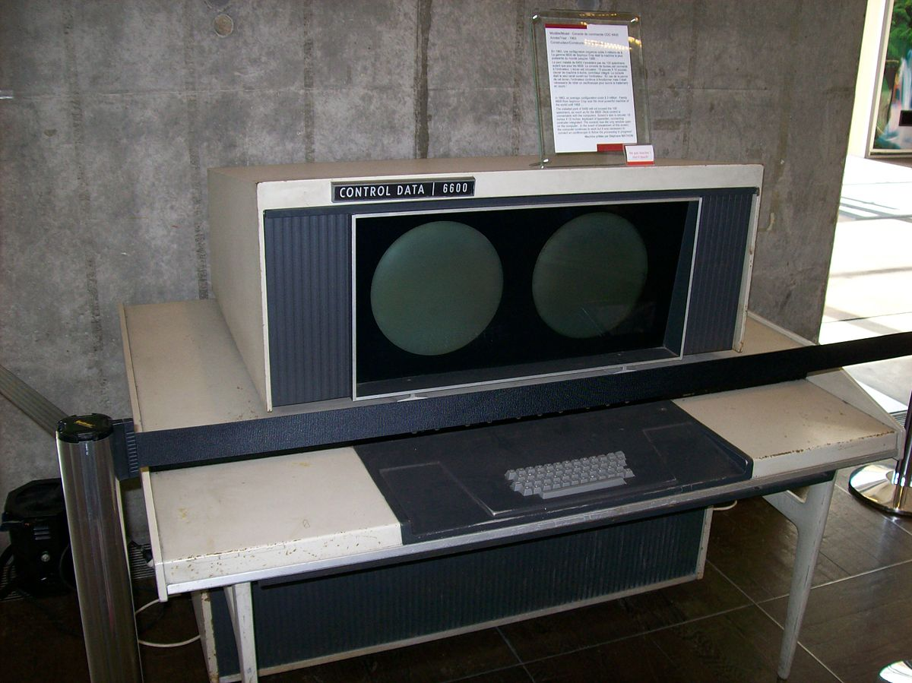

★Tercera generación (1965-1971)★
Comienza a utilizarse los circuitos integrados, lo cual permitió abaratar costos al mismo tiempo que se aumentaba la capacidad de procesamiento y se reducía el tamaño de las máquinas. La tercera generación de computadoras emergió con el desarrollo de circuitos integrados (pastillas de silicio) en las que se colocan miles de componentes electrónicos en una integración en miniatura. El -8 de la Digital fue el primer y fue propagado en los comercios. A finales de los años 1950 se produjo la invención del circuito integrado o chip, por parte de Jack S. Kilby y Robert Noyce. Después llevó a la invención del microprocesador, en la formación de 1960, investigadores como en el formaban un código, otra forma de codificar o programar.1 2
A partir de esta fecha, empezaron a empaquetarse varios transistores diminutos y otros componentes electrónicos en un solo chip o encapsulado, que contenía en su interior un circuito completo: un amplificador, un oscilador, o una puerta lógica. Naturalmente, con estos chips (circuitos integrados) era mucho más fácil montar aparatos complicados: receptores de radio o televisión y computadoras.

Dirección: Cl. 71b #29-14
PBX: 3175959760
Email: cristianmoralesoc2002@gmail.com